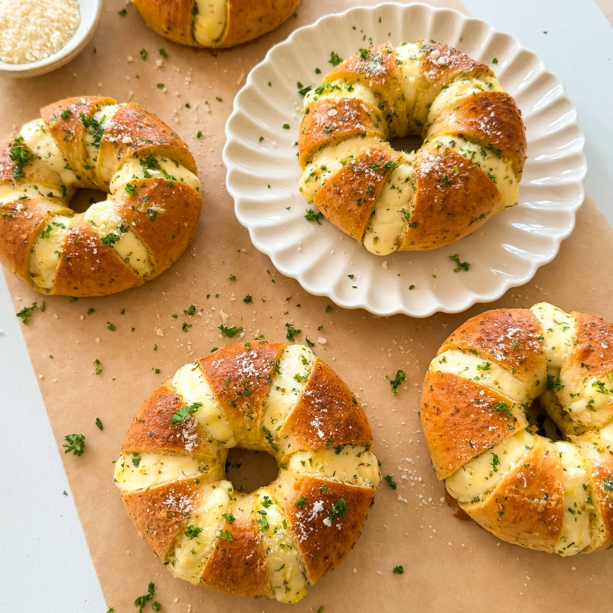

Cream Cheese Stuffed Garlic Bagel
Bagel fans, get ready for a taste of Calic Bagels at home with these
cream cheese-stuffed garlic bread bagels! You have truly tasted
nothing like it before.
Inspired by the famous LA bakery, these are a must-try. Picture
creamy tangy filling alternating with a garlic-buttery bagel
crust—it couldn't get any better and it's
actually pretty easy to make at home!
Prep Time: 45 minutes
Cook Time: 15 minutes
Total Time: 1 hour
Yields: 6 bagels
Ingredients
CREAM CHEESE FILLING
- 8 ounces cream cheese, softened/room temp
- 1 tablespoon granulated white sugar
- 1 tablespoon sweetened condensed milk
- pinch of salt
GARLIC BUTTER
- 1 egg
- 1/2 cup unsalted butter, melted
- 2 tablespoons minced garlic
- 1 1/2 tablespoons chopped parsley
- 2 tablespoons milk
- 1 to 2 tablespoons kewpie mayo
- 1 teaspoon oregano
- 3 tablespoons grated parmesan
- 1/2 teaspoon salt
Instructions
MAKE THE CHEESE FILLING
-
To a mixing bowl, add the cream cheese, granulated white sugar,
sweetened condensed milk, and a pinch of salt.
-
Use a stand mixer or hand mixer and whisk until smooth.
Set aside.
MAKE THE GARLIC BUTTER
-
To a bowl, add the egg, melted butter, minced garlic, chopped
parsley, milk, mayo, oregano, grated parmesan, and salt.
- Mix together until combined well and set aside.
ASSEMBLE AND BAKE
- Preheat oven to 350°F.
-
Make 6 cuts across each bagel but do not make the cuts going all
the way down. Cut a small section out of each cut to make room
for the cream cheese filling.
-
Using a piping bag or ziploc bag with the tip cut off, fill the
bagel with the cream cheese filling in each of the cuts.
-
Once all the bagels are filled, dunk each of them in the garlic
butter. Fully submerge it, then let any excess drip off, and
place it on a baking tray lined with parchment paper.
-
Bake in the oven for 11 to 13 minutes or until golden brown all
around.
-
Once out of the oven, garnish with more chopped parsley and
grated parmesan. Allow to cool down and then enjoy!
Sourced from:
https://moribyan.com/cream-cheese-stuffed-garlic-bagel/